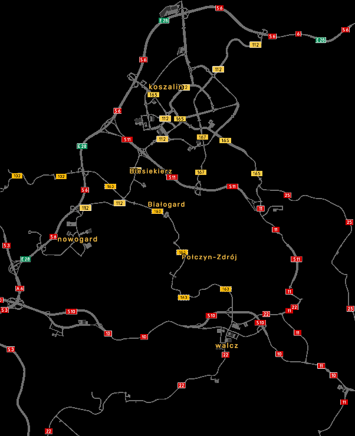

Note: Jeżeli posiadasz garaż w Koszalinie kupiony przed wersją 8.1, to przed aktualizacją musisz go sprzedać. Inaczej gra nie wczyta zapisu!
Instalacja: Pobrany plik przenieś do (...)\Dokumenty\Euro Truck Simulator 2\mod i aktywuj w menedżerze modyfikacji w grze, ustawiając wyższy priorytet nad ProMods.
Poland Rebuilding jest i będzie niekompatybilny!
Chcesz zgłosić błąd? Kliknij tu
Zalecana kolejność modyfikacji:

Siatka drogowa na wersje 9.1:
